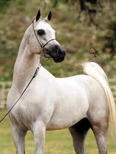

CABALLO ARABE
|  |
 |
Es una de las razas de caballo más antiguas, ya que hay evidencia arqueológica de hace 4.500 años de caballos muy similares a los árabes modernos. En el transcurso de la historia, los caballos árabes del Medio Oriente se esparcieron por el mundo gracias al comercio y las guerras. También fueron muy usados para mejorar otras razas al añadir velocidad, refinamiento, resistencia y buena estructura ósea. Hoy día, las líneas árabes se pueden encontrar en casi cada raza moderna de caballos para montar.
Los caballos árabes se desarrollaron en un clima desértico y eran valorados por los nómadas beduinos, quienes frecuentemente los alojaban dentro de sus tiendas para cubrirlos y protegerlos.1 Esta relación cercana con los humanos creó una raza de caballo con buena disposición, rápido para aprender, y dispuesto a complacer. Pero el caballo árabe también desarrolló el carácter fuerte y el estado alerta necesario en un caballo usado para los asaltos de las guerras. Esta combinación de disposición y sensibilidad requiere que los dueños modernos de caballos árabes traten sus caballos con respeto y mucha habilidad.2
"El polifacético árabe" es el lema de la raza. Los caballos árabes compiten hoy en muchos campos de actividad ecuestres, lo que los hace una de las 10 razas de caballo más populares en el mundo. Los caballos árabes hoy se pueden encontrar en todo el mundo, incluyendo Polonia, Estados Unidos, Canadá, el Reino Unido, Australia, República Dominicana, Europa continental, Sudamérica (especialmente Brasil), y en su tierra de origen, el Medio Oriente.
MENU